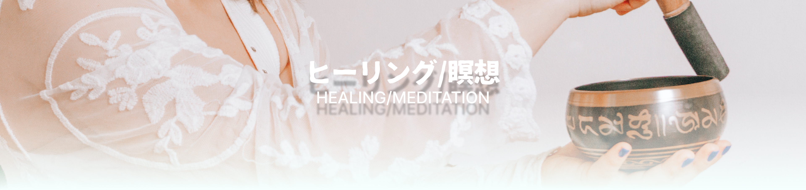
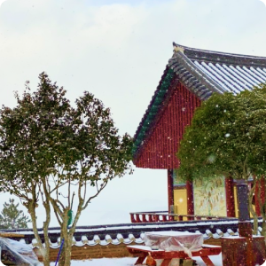

テーマ別観光名所
ビューティー/スパ
韓方
自然
ヒーリング/瞑想
地域別観光名所
ソウル特別市
京畿道
仁川広域市
江原道
慶尚北道/
大邱広域市
慶尚南道
忠清道
大田広域市
全羅道/
光州広域市
釜山広域市/
蔚山広域市
済州特別自治道
エディターおすすめの観光コース
ダブ's pick
ドヨン's pick
スヴ's pick
セン's pick
リム’s pick
関連機関
機関目録
LANGUAGE
한국어
ENGLISH
日本語

#ヒーリング/瞑想
西帰浦治癒の森
自然とともに休息空間として宿泊施設(自然休養林)を利用することができます。赤いオルム木材文化体験場では自然体験プログラムを運営しています。
ホームページ :
https://healing.seogwipo.go.kr/index.htm
住所 : 済州西帰浦市山麓南路2271
電話番号 : 064-760-3067
#ヒーリング/瞑想
聖水連邦-天上家屋
聖水連邦-天上家屋の1階中央はアートパビリオンでシーズン別に多彩な展示を披露します。 1階と2階には彰化堂、ブルワリー、書店アークアンドブック、ライフスタイルセレクトショップ「ティングルストア」などが入店しています。
ホームページ :
https://sites.google.com/view/ssyb,
http://www.instagram.com/ssyb.sungsu
住所 : ソウル城東区聖水路14ギル14
電話番号 : 010-8979-8122
#ヒーリング/瞑想
蘇堤洞路地
無関心の中であやうく消え去りそうになっていた小堤洞の官舎村は都市再生専門業者「益善多多」のおかげで新しい空間に変貌しています。 小堤洞の路地には個性あふれる食堂とカフェがたくさんできました。 忠清道で生産される食材としてパスタやピザを作るイタリアレストラン「パウンド」、 韓国初のコーヒー、養湯汁を味わうことができる「クァンサチョンコーヒー」、 そして茶葉に果物チョンやラム、バッカディなどの酒類を適切な割合で混ぜたブレンドティーと酒が相対的に入らないティーカクテルが味わえる「プンニュガ」など、 小堤洞路地の店では伝統の美しさと余裕が楽しめます。 また、塀ごとに描かれた壁画を見ながら路地を歩いていると、この道が自分だけの空間であるかのように解放感も感じられます。
ホームページ :
https://korean.visitkorea.or.kr/detail/rem_detail.do?cotid=c557e923-5e10-492b-ab20-6e8edb2dfbc9&con_type=11400
住所 : 大田東区鉄甲2ギル2
電話番号 : 042-251-4114

#ヒーリング/瞑想
神興寺テンプルステイ
神興寺テンプルステイはオーダーメイド型プログラムと礼仏、鉢盂供養などのプログラムを実施する体験型テンプルステイと、伝統と自然の中の休息、ヒーリング中心の休息型テンプルステイをご提供します。 神興寺テンプルステイの近くには渓谷と海があり、自然を感じながら内面を振り返る時間を持つことができます。
ホームページ :
http://www.sinheungsa.co.kr/
住所 : 蔚山広域市北区大安4ギル280
電話番号 : 052-295-7522
1
2
3
4
5
6